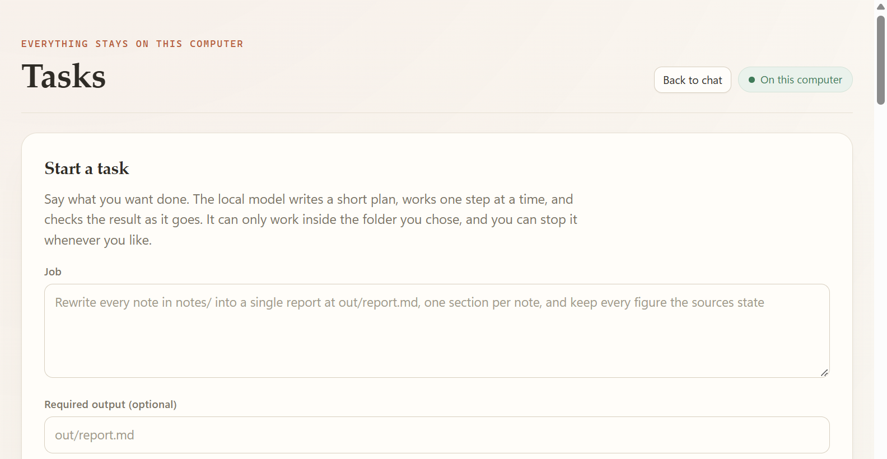

Using the app
Jobs
A job is open-ended work: no frozen step list, a live todo list the model maintains, and a required output that must exist on disk before the job can pass.
A job is open-ended work the way an interactive coding agent does it: you state a goal, the model keeps its own todo list, calls tools, reads the real output of each call, and chooses the next action from what it observed. There is no frozen step list.
If you need a plan approved up front, use a verified task or the plan-first lfm3 task command. If you need a conversation, use Chat.
Describe a job#
The desktop panel asks for four things:
| Field | Meaning |
|---|---|
| Goal | What to accomplish, in plain language |
| Required output | Optional file the job must produce, relative to the workspace |
| Minute budget | Whole-job deadline |
| Turn cap | Most model turns before the loop stops |


- Start a taskThe job panel. It runs the same loop as
lfm3 joband streams every turn into this view. - JobThe goal in plain language. The model writes its own todo list from it; no step list is frozen here.
- Required outputOptional path, relative to the workspace, that the job must produce before it can pass.
- Measured finishSize and fingerprint are recorded for that file, so a claim of completion is checked rather than accepted.
The engine then runs the same model-driven loop as lfm3 job and streams every turn to the app. The panel shows each turn's phase, the model's own todo list with each step's check and status, each turn's tool calls with their real output, and the measured output bytes and digest. There is no acceptance hash, because a job is not verified mission work.
The three phases#
plan. Before any workspace action, the model must call todo_write with one to eight short steps. The plan cannot be empty, and finish is refused until it exists. Every step that creates or changes a file should carry a deterministic check: file_exists, dir_exists, or content_matches with a non-empty needle.
work. One bounded action at a time advances an open step. Marking a step done is measured: the harness runs its check against the real workspace and demotes a done claim whose check fails. Once every source has been read, the tool set narrows to write_file, so the only way forward is the artifact.
review. Writing a non-empty deliverable opens a review turn: the model re-reads the file, compares it with the goal, and either repairs it or finishes. A first finish without a re-read is refused once with a concrete instruction; the measured proof still decides the result.
The brief also carries an advisory grounding note listing multi-digit numbers in the output that appear in no observed source, so the model can verify or remove them. The note never changes the status.
What the harness enforces#
- The model cannot grade itself.
finishis accepted only when the required output exists and is non-empty. The report carries the measured bytes and digest. A bare "finished" is refused and the model is told to keep working. - Every turn is evidence. Each tool call and its real output is recorded, and a repeated identical call is refused instead of quietly looping. A call refused before execution never counts as "seen", so a later phase can still take it.
- The harness steers. Unread sources are named in the prompt, and the tool set narrows to
write_fileonce they have all been read. - Writes are guarded. An empty or placeholder write is refused, and a source file the job is supposed to read cannot be overwritten. A job that is supposed to produce
out/report.mdis told to write that file, not another one. - Tools follow the route.
search_filesandrelated_filesare always granted;lookandtranscribeonly when the route selects the vision or audio model. Routing widens capability, never authority. - Stopping is honest. Every stop reason is reported as what it is, and no turn cap is ever reported as success.
Limits#
| Bound | Default | Notes |
|---|---|---|
| Whole-job deadline | 30 minutes | --minutes on the CLI; the form takes minutes |
| Model turns | 40 | --max-turns; the desktop form takes a turn cap |
| Tool calls per turn | 3 | --max-calls, clamped to 1–4 |
| Plan size | 1–8 steps | Enforced by todo_write |
| Turns without a plan | 3 | Then the loop stops as stalled |
| Turns without a write | 6 | Then the loop stops as stalled |
The acting model's profile is the ceiling on all of these. A request for more turns than the profile allows is clamped to what the model can actually sustain, rather than being honoured and then failing late.
Outcomes#
| Status | Meaning |
|---|---|
passed | The required output exists, is non-empty, and its digest was measured |
unverified | The loop finished without a measurable artifact to certify |
turn_budget | The turn cap was reached |
deadline | The minute budget ran out |
stalled | Repeated turns without progress in the loop's terms |
interrupted | The engine stopped mid-job; it is reported, never resumed |
A measured artifact can still pass a stalled review turn: if the file exists and verifies, the job's result is what the file says, not what the last turn claimed.
Jobs on the command line#
lfm3 job \
--goal "Read notes/ and write out/report.md, one section per note" \
--workspace ./demo \
--deliverable out/report.md \
--minutes 30 \
--max-turns 24 \
--events ---deliverable is detected from the goal when omitted. --events - writes durable JSON lines to stdout. The full flag list is in the CLI reference.
A measured example from the project's own run log: a four-turn job — plan (todo_write), work (read_file notes.md), work (write_file 483 bytes to out/report.md), review (read_file out/report.md) — exited 0 with status: "passed" and the report carrying the measured 483 bytes and digest 35b845745a0c6a4a.
Job versus task#
lfm3 job and the desktop job panel | lfm3 task | |
|---|---|---|
| Plan | Written by the model in the loop | Frozen and validated before execution |
| Approval | The same workspace tools and approval path | Each step approved before it runs |
| Shape | Model-chosen, one action at a time | A fixed ordered plan, every step with a check |
| Best for | Discovery, extraction, open-ended drafting | Predictable, reviewable, repeatable work |
lfm3 task also enforces the plan floor: --steps caps the plan (default 16), --min-steps refuses a plan that collapses into one call (default 2), and every step must declare at least one check. A write_file or edit_file step whose checks name no file path is rejected before the acceptance is frozen, so an untestable step never runs.
Where jobs live#
Jobs are stored in jobs.db in the trusted data directory. Events arrive on the lfm3:job-event channel. A job the engine stopped in the middle of is reported as interrupted rather than resumed, matching the rule for verified runs.
When a job does not finish#
Most honest failures are a goal that is too broad for a 1.7B model. Practical adjustments, in order:
- Name the output path. A deliverable in the goal is frozen as the required artifact.
- Narrow the source set. Instead of "read the project", say "read
notes/*.md". - Give it one job. Splitting "summarise, then rewrite, then chart" into three jobs beats raising the turn cap.
- Raise the deadline only after the goal is narrow. More turns on a vague goal produce repetition, not progress.